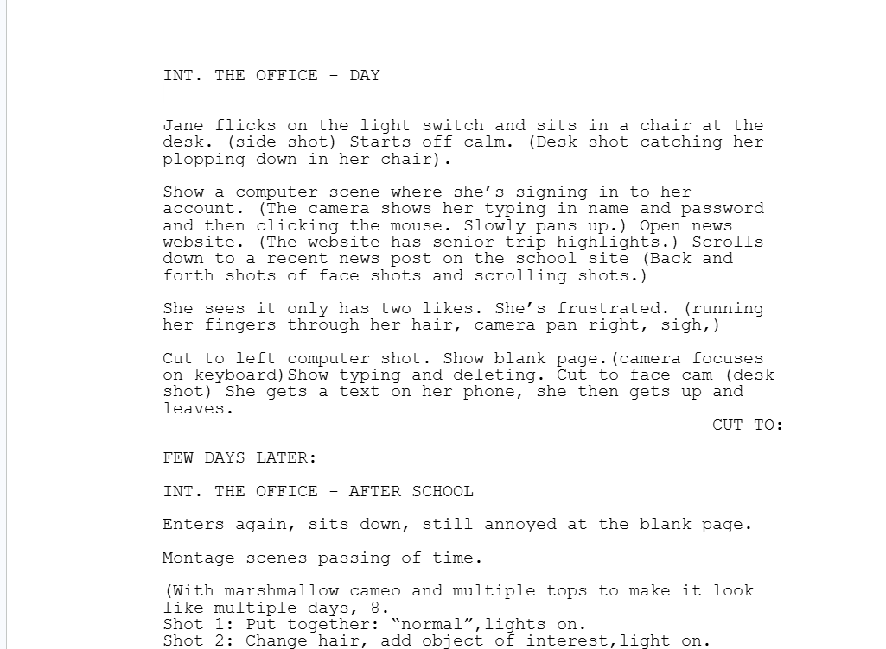
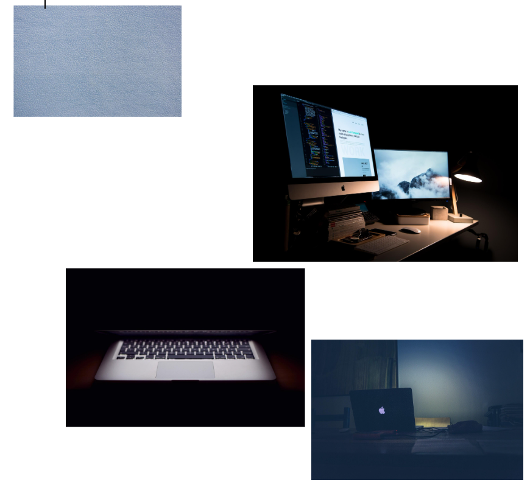
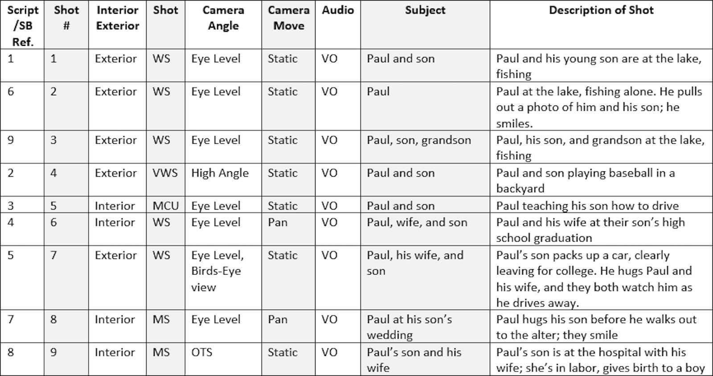

After you have your team and you have a movie idea, you need to come up with an concept of how the movie will flow. There are multiple things of can do. However, there are three things that I would recommend you write out because these three cover every bit of detail for what you need to do. Here they are:

Scripts are the written versions of your movie. A script typcially consists of written dialogs and written actions for the movies characters. A good rule of thumb to remember is that one minute is roughly equivalent to one page of your script.

Mood boards are pictures that are all put together on one document. It is the pictures of props, colors, and clothes that you might want to use in your film. This is used to se the mood of your film and give you an idea of how to capture that mood. A mood board is usually one page.

Shot lists are written and (sometimes but uncommon) drawn versions of what your shots in your movie should look like. They also show where your light comes from and where the camera is positioned. It also shows where your characters will be in each shot. The length depends on the lengthe of the movie.